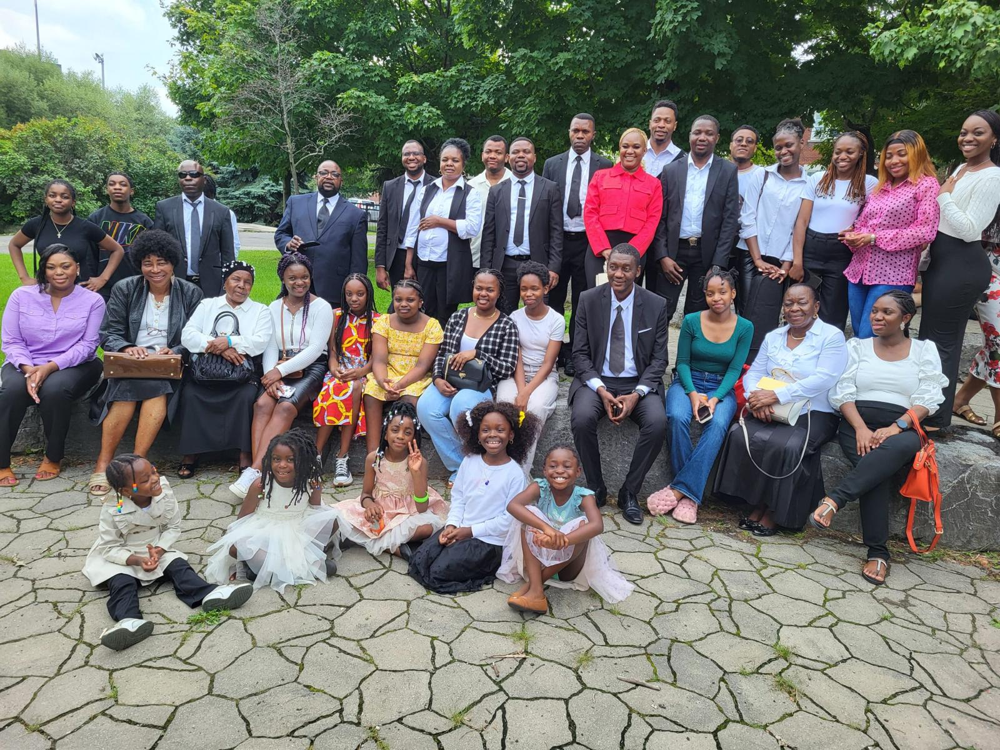
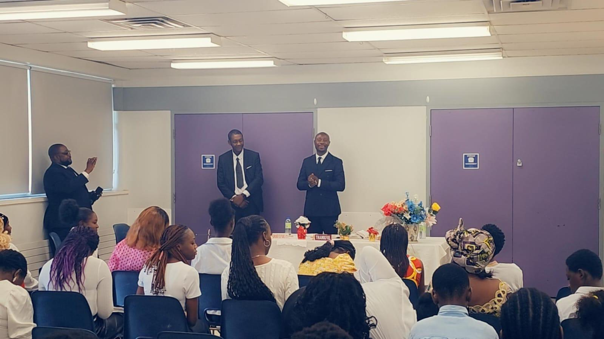
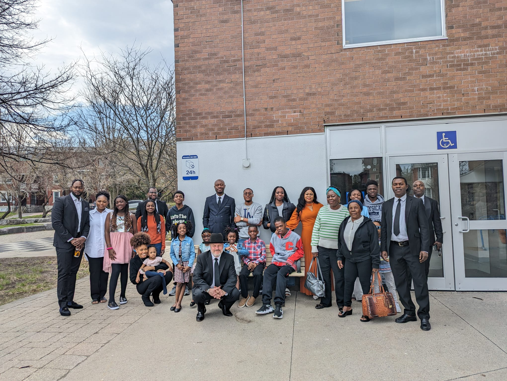

Chaque dimanche à 10h il se tient des services divins dans cette commumauté pour apprendre la volonté de Dieu et être en étroite communion avec lui.
A part la prédication lors des services divins, il est organisé des discussions bibliques permettant ainsi que les fidèles grandissent dans la foi et qu'ils apprennent davantage la doctrine.
En dehors des prières faites chaque dimanche en commuté, des rencontres des prières sont organisés en semaine pour permettre la communion avec notre père céleste ainsi qu'avec les fidèles unis aux serviteurs de Dieu.
